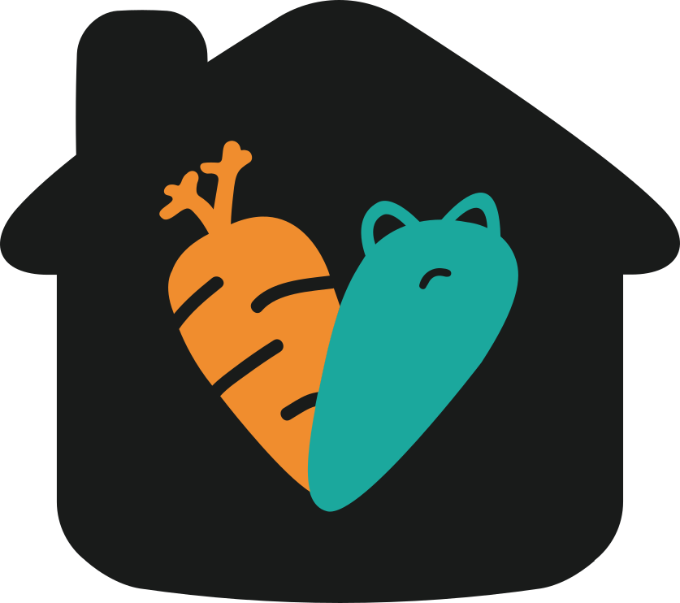
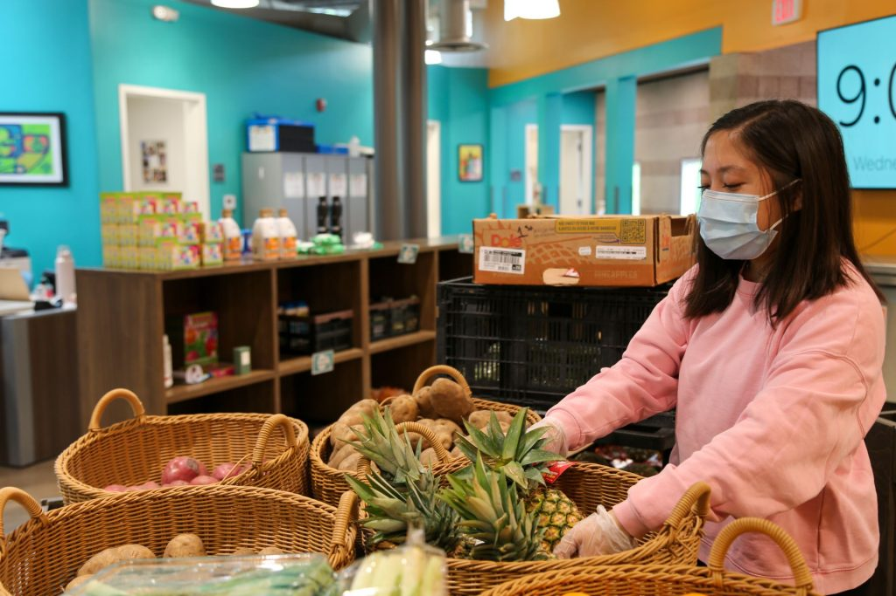
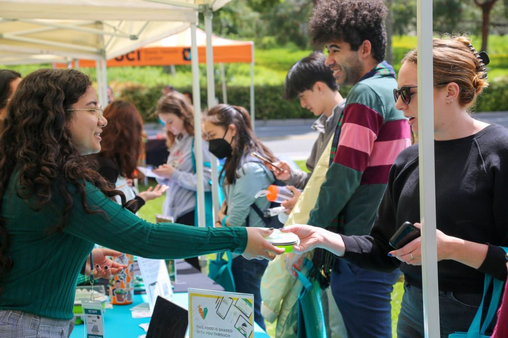

UCI Basic NeedsEstablished in 2017, The UCI Basic Needs Center offers programs to support every enrolled student with food, housing, financial wellness, and care.

The Basic Needs Center opened in 2017 at the end of Lot 5. By 2023, it had grown into a fully resourced campus center and a permanent home for fourteen programs spanning food, housing, financial wellness, transportation, social work, and family support.
Our name reflects our evolution throughout the years: helping students meet the basic conditions for staying enrolled, healthy, and on track to graduate.

Filter through the fourteen programs offered.
Walk-in pantry · non-perishables, produce, dairy, protein, toiletries.
Pick up one basket per week with your UCI student ID. Appointments are encouraged, but walk-ins are welcome!
On the move near your housing community.
First Friday of every academic-year month. Hosted at Arroyo Vista, Verano 8, and Palo Verde housing.
Free leftover catering, texted live to your phone.
Opt in once and get SMS pings whenever there's extra catered food on campus. Feeds students; fights food waste.
California's SNAP program.
Up to $298/month for groceries. We walk you through eligibility and the application through appointments, OCSSA support hours, or 1-day enrollment parties.
Access to the UCI Dining Commons.
Meal swipes to access healthy and well-balanced meals for students facing food insecurity. Urgent access is available the same week through a campus social worker.
Short-term emergency support.
For students with food insecurity who can't access the pantry due to transportation or other barriers and are unable to access CalFresh, emergency meal swipes, or the FRESH Pantry.
Snacks across campus.
Quick snacks stocked at 20+ resource centers across UCI. Departments may email the center to host one.
Rapid re-housing, up to a 30-day stay.
Five emergency housing spaces (4 Campus Village apartments + 1 Arroyo Vista suite) for full-time students experiencing homelessness. Includes meal plan and move-in kit.
1-on-1 with licensed clinicians.
Confidential consultations with Peter and Christy, the Center's licensed clinical social workers. Self-refer through the Basic Needs website. Staff and faculty may submit referrals.
1-on-1 confidential 45-minute sessions.
Personal coaching on budgeting and money goals. 10 min check-in, 30 min planning, 10 min Q&A. Group workshops available on request.
Up to $2,000.
Case-by-case emergency grants for enrolled students in financial crisis tied to basic needs (not tuition). $500 cap in summer, $2K during the academic year.
Get to where you need to be.
For UCI students who cannot access medical or mental-health appointments, grocery stores, or car repairs because of transportation barriers.
50 diapers or pull-ups per baby, per month.
For any parenting UCI student with diaper-aged children. Funded by California's Diaper Bank Network through CAPOC.
Free professional clothing pop-up.
Fall and spring pop-up. 3–4 free items of interview-ready clothing, timed a week before UCI's Career Fairs.
CalFresh is California’s version of the Supplemental Nutrition Assistance Program (SNAP), the federal food-assistance program. Funds are provided through an EBT card and able to be used at most grocery stores and farmers markets. Benefits which are not used by end of the month roll over to the next month.
Low-friction, high impact.
In contrast to other resources, Zot Bites brings food resources to you by text. It also solves two problems at once: students can eat free, and catered food that would have been thrown out gets eaten instead.
Hello, Zot Bites users!
There is pasta and salad available at the Student Center in Pacific Ballroom B on a first-come, first-serve basis for 30 minutes.
No. The FRESH Pantry, Zot Bites, Snack Stations, and most of the food-related resources only ask for a current UCI student ID and enrollment.
However, a few specific programs do have eligibility criteria. CalFresh has income and citizenship rules. The Economic Crisis Response Grant requires documentation that other resources are exhausted. Sponsored Housing requires a campus social worker referral.
There are two paths for urgent situations:
Email basicneeds@uci.edu if you are not sure where to start.
Corner of Peltason Dr. & Academy Way
UC Irvine
basicneeds@uci.edu
basicneeds.uci.edu
@ucibasicneeds